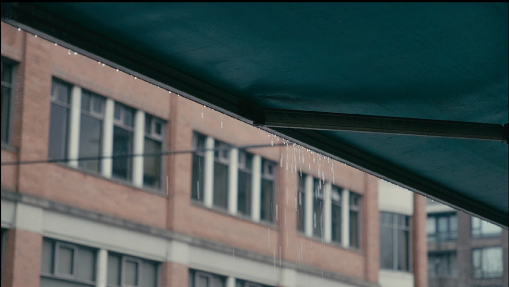
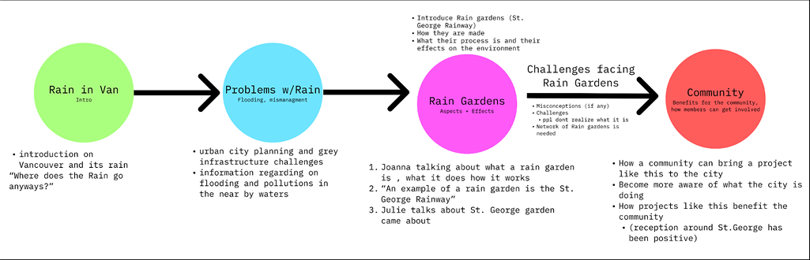
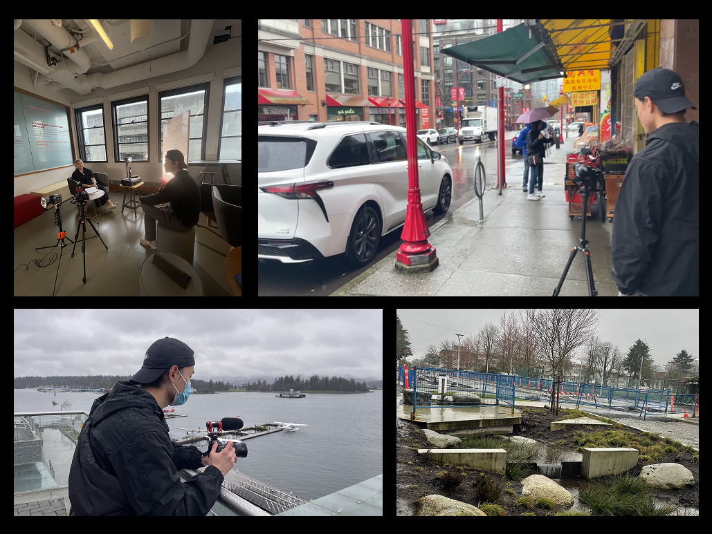
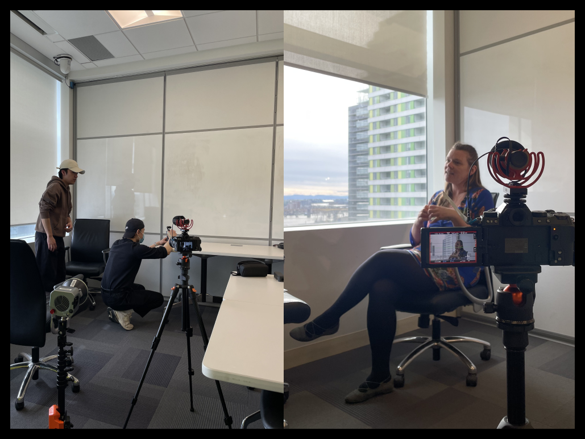
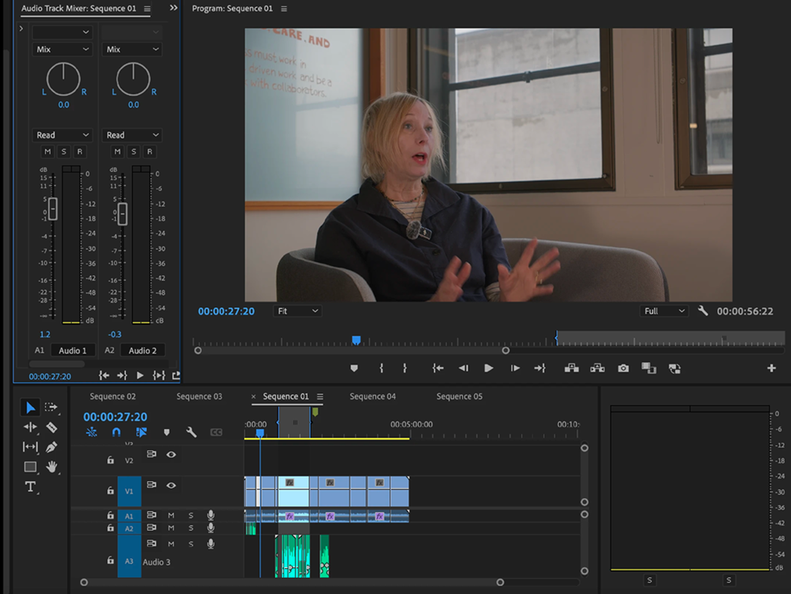
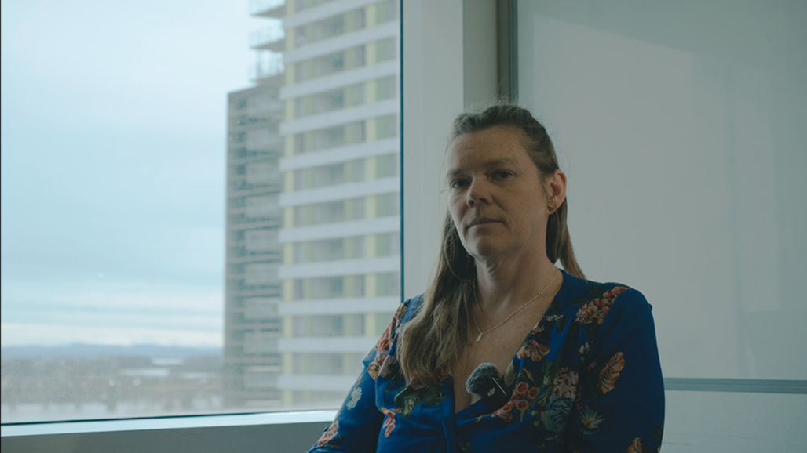

This short documentary explores rain gardens as a sustainable stormwater solution in Vancouver, featuring expert interviews that highlight how rain gardens reduce flooding and improve water quality. The project was created with the collabration with the Museum of Vancouver for the school's Moving Image course.
Through this course,this project allowed me to apply and refine production and post-production techniques, from camera composition and sound to editing and deliverable.
Skills: Researching, Storyboarding, Video Editing, Color Grading, Sound Design and Motion Graphics
Tools: Adobe Premiere Pro, After Effects, DaVinci, Final Cut Pro and Audacity

Inspired by Vancouver’s identity as the "City of Rain," the team began by exploring the relationship between people and rainfall in an urban context. With the city experiencing high annual precipitation, early discussions centered around how rain affects daily life and infrastructure.
This led to a key question: how do communities adapt to and manage the impact of constant rain? Through this lens, the concept of rain gardens emerged with a sustainable stormwater solution that addresses flooding, improves water quality, and blends ecological function with urban design.

The team focused on crafting a compelling narrative that could introduce the concept of rain gardens within a five-minute documentary format. To ground the story in real-world impact, interviews were planned with community experts and an SFU professor actively involved in green infrastructure projects.
During pre-production, the team established a clear visual direction for the film, with careful attention given to how tone and theme would be conveyed through imagery. The storyboard underwent several iterations using Freytag’s story structure, the documentary was shaped to follow a narrative arc: beginning with Vancouver’s rainy climate, then addressing the problems caused by excess rain, leading into the introduction of rain gardens as a sustainable solution.

Our team visited multiple outdoor and indoor locations to gather B-roll footage. We carefully considered how each shot could visually express the emotional tone we wanted to convey through our narration. We adjusted angles and framing to match the intended atmosphere of the documentary and ensured the footage aligned with our thematic focus.

During production, I was responsible for setting up lighting and sound at our interview locations. Since we worked outside of a controlled studio environment, I had to creatively adapt the setup to ensure the scene appeared visually polished and the audio remained clear. I prioritized using natural light effectively and minimized background noise, despite limited technical resources.

Once finalized, B-roll footage was gathered across multiple indoor and outdoor locations. Each shot was composed with intention, framing, angles, and movement were chosen to visually echo the emotional tone of the voiceover and reinforce the documentary’s focus on rain gardens as a sustainable stormwater solution. This thoughtful visual planning ensured consistency with the film’s message, enhancing both clarity and impact.

The final film was showcased by the Museum of Vancouver, serving as a public-facing piece to raise awareness about the environmental and community benefits of rain gardens.
This project offered the opportunity to merge technical and creative skillsets while navigating the realities of real-world production where unexpected challenges often required quick adaptation and problem-solving.